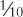

Throughout recorded history, people have invented numerous clever gadgets and machines in a universal quest to make mathematical calculations just a little bit easier. While the human species seemingly has an innate numerical ability, we also require frequent assistance. We can often conceive of problems that we can't easily solve ourselves.
The development of number systems can be seen as an early tool to help people keep track of commodities and property. Many cultures, including the ancient Greeks and native Americans, seem to have counted with the assistance also of pebbles or kernels of grain. In Europe, this led to counting boards, and in the Middle East to the familiar frame-and-bead abacus:

Although commonly associated with Asian cultures, the abacus seems to have been introduced to China by traders around 1200 CE.
No one has ever really enjoyed multiplication and division, but few people have done anything about it. The Scottish mathematician John Napier (1550–1617) was one of those few. He invented logarithms for the specific purpose of simplifying these operations. The product of two numbers is simply the sum of their logarithms. So if you need to multiply two numbers, you look them up in a table of logarithms, add the numbers from the table, and then use the table in reverse to find the actual product.
The construction of tables of logarithms occupied some of the greatest minds of the subsequent 400 years while others designed little gadgets to use in place of these tables. The slide rule has a long history beginning with a logarithmic scale made by Edmund Gunter (1581–1626) and refined by William Oughtred (1574–1660). The history of the slide rule effectively ended in 1976, when the Keuffel & Esser Company presented its last manufactured slide rule to the Smithsonian Institution in Washington D.C. The cause of death was the hand-held calculator.
Napier also invented another multiplication aid, which is composed of strips of numbers usually inscribed on bone, horn, or ivory and hence referred to as Napier's Bones. The earliest mechanical calculator was a somewhat automated version of Napier's bones built around 1620 by Wilhelm Schickard (1592–1635). Other calculators based on interlocking wheels, gears, and levers are almost as old. Two of the more significant builders of mechanical calculators were the mathematicians and philosophers Blaise Pascal (1623–1662) and Gottfried Wilhelm von Leibniz (1646–1716).
You'll no doubt recall what a nuisance the carry bit was in both the original 8-Bit Adder and the computer that (among other things) automated the addition of numbers wider than 8 bits. The carry seems at first to be just a little quirk of addition, but in adding machines, the carry is really the central problem. If you've designed an adding machine that does everything except the carry, you're nowhere close to being finished!
How successfully the carry is dealt with is a key to the evaluation of old calculating machines. For example, Pascal's design of the carry mechanism prohibited the machine from subtracting. To subtract, the nines' complement had to be added the way that I demonstrated in Chapter 13. Successful mechanical calculators that real people could use weren't available until the late nineteenth century.
One curious invention that was to have a later influence on the history of computing—as well as a profound influence on the textile industry—was an automated loom developed by Joseph Marie Jacquard (1752–1834). The Jacquard loom (circa 1801) used metal cards with holes punched in them (much like those of a player piano) to control the weaving of patterns in fabrics. Jacquard's own tour de force was a self-portrait in black and white silk that required about 10,000 cards.
In the eighteenth century (and indeed up to the 1940s), a computer was a person who calculated numbers for hire. Tables of logarithms were always needed, and trigonometric tables were essential for nautical navigation using the stars and planets. If you wanted to publish a new set of tables, you would hire a bunch of computers, set them to work, and then assemble all the results. Errors could creep in at any stage of this process, of course, from the initial calculation to setting up the type to print the final pages.
The desire to eliminate errors from mathematical tables motivated the work of Charles Babbage (1791–1871), a British mathematician and economist who was almost an exact contemporary of Samuel Morse.
At the time, mathematical tables (of logarithms, for example) were not created by calculating an actual logarithm for each and every entry in the table. This would have taken far too long. Instead, the logarithms were calculated for select numbers, and then numbers in between were calculated by interpolation, using what are called differences in relatively simple calculations.

Beginning about 1820, Babbage believed that he could design and build a machine that would automate the process of constructing a table, even to the point of setting up type for printing. This would eliminate errors. He conceived the Difference Engine, and basically it was a big mechanical adding machine. Multidigit decimal numbers were represented by geared wheels that could be in any of 10 positions. Negatives were handled using the ten's complement. Despite some early models that showed Babbage's design to be sound and some grants from the British government (never enough, of course), the Difference Engine was never completed. Babbage abandoned work on it in 1833.
By that time, however, Babbage had an even better idea. It was called the Analytical Engine, and through repeated design and redesign (with a few small models and parts of it actually built) it consumed Babbage off and on until his death. The Analytical Engine is the closest thing to a computer that the nineteenth century has to offer. In Babbage's design, it had a store (comparable to our concept of memory) and a mill (the arithmetic unit). Multiplication could be handled by repeated addition, and division by repeated subtraction.
What's most intriguing about the Analytical Engine is that it could be programmed using cards that were adapted from the cards used in the Jacquard pattern-weaving loom. As Augusta Ada Byron, Countess of Lovelace (1815–1852), put it (in notes to her translation of an article written by an Italian mathematician about Babbage's Analytical Engine), "We may say that the Analytical Engine weaves algebraical patterns just as the Jacquard-loom weaves flowers and leaves."
Babbage seems to be the first person to understand the importance of a conditional jump in computers. Here's Ada Byron again: "A cycle of operations, then, must be understood to signify any set of operations which is repeated more than once. It is equally a cycle, whether it be repeated twice only, or an indefinite number of times; for it is the fact of a repetition occurring at all that constitutes it such. In many cases of analysis there is a recurring group of one or more cycles; that is, a cycle of cycle, or a cycle of cycles."
Although a difference engine was eventually built by father-and-son team Georg and Edvard Scheutz in 1853, Babbage's engines were forgotten for many years, only to be resurrected in the 1930s when people began searching for the roots of twentieth century computing. By that time, everything Babbage had done had already been surpassed by later technology, and he had little to offer the twentieth century computer engineer except a precocious vision of automation.
Another milestone in the history of computing resulted from Article I, Section 2, of the Constitution of the United States of America. Among other things, this section calls for a census to be taken every ten years. By the time of the 1880 census, information was accumulated on age, sex, and national origin. The data amassed took about seven years to process.
Fearing that the 1890 census would take longer than a decade to process, the Census Office explored the possibility of automating the system and chose machinery developed by Herman Hollerith (1860–1929), who had worked as a statistician for the 1880 census.
Hollerith's plan involved manila punch cards 6 ⅝ x 3 ¼ inches in size. (It's unlikely that Hollerith knew about Charles Babbage's use of cards to program his Analytical Engine, but he was almost certainly familiar with the use of cards in the Jacquard loom.) The holes in these cards were organized into 24 columns of 12 positions each, for a total of 288 positions. These positions represented certain characteristics of a person being tallied in the census. The census taker indicated these characteristics by punching ¼-inch square holes into the appropriate positions on the card.

This book has probably so accustomed you to thinking in terms of binary codes that you might immediately assume that a card with 288 possible punches is capable of storing 288 bits of information. But the cards weren't used that way.
For example, a census card used in a purely binary system would have one position for sex. It would be either punched for male or unpunched for female (or the other way around). But Hollerith's cards had two positions for sex. One position was punched for male, the other for female. Likewise, the census taker indicated a subject's age by making two punches. The first punch designated a five-year age range: 0 through 4, 5 through 9, 10 through 14, and so forth. The second punch was in one of five positions to indicate the precise age within that range. Coding the age required a total of 28 positions on the card. A pure binary system would require just 7 positions to code any age from 0 through 127.
We should forgive Hollerith for not implementing a binary system for recording census information: Converting an age to binary numbers was a little too much to ask of the 1890 census takers. There's also a practical reason why a system of punched cards can't be entirely binary. A binary system would produce cases in which all the holes (or nearly all) were punched, rendering the card very fragile and structurally unsound.
Census data is collected so that it can be counted, or tabulated. You want to know how many people live in each census district, of course, but it's also interesting to obtain information about the age distribution of the population. For this, Hollerith created a tabulating machine that combined hand operation and automation. An operator pressed a board containing 288 spring-loaded pins on each card. Pins corresponding to punched holes in the cards came into contact with a pool of mercury that completed an electrical circuit that triggered an electromagnet that incremented a decimal counter.
Hollerith also used electromagnets in a machine that sorted cards. For example, you might want to accumulate separate age statistics for each occupation that you've tallied. You first need to sort the cards by occupation and then accumulate the age statistics separately for each. The sorting machine used the same hand press as the tabulator, but the sorter had electromagnets to open a hatch to one of 26 separate compartments. The operator dropped the card into the compartment and manually closed the hatch.
This experiment in automating the 1890 census was a resounding success. All told, over 62 million cards were processed. They contained twice as much data as was accumulated in the 1880 census, and the data was processed in about one-third the time. Hollerith and his inventions became known around the world. In 1895, he even traveled to Moscow and succeeded in selling his equipment for use in the very first Russian census, which occurred in 1897.
Herman Hollerith also set in motion a long trail of events. In 1896, he founded the Tabulating Machine Company to lease and sell the punch-card equipment. By 1911, with the help of a couple of mergers, it had become the Computing-Tabulating-Recording Company, or C-T-R. By 1915, the president of C-T-R was Thomas J. Watson (1874–1956), who in 1924 changed the name of the company to International Business Machines Corporation, or IBM.
By 1928, the original 1890 census cards had evolved into the famous "do not spindle, fold, or mutilate" IBM cards, with 80 columns and 12 rows. They remained in active use for over 50 years, and even in their later years were sometimes referred to as Hollerith cards. I'll describe the legacy of these cards more in Chapters Chapter 20, Chapter 21, and Chapter 24.
Before we move on to the twentieth century, let's not leave the nineteenth century with too warped a view about that era. For obvious reasons, in this book I've been focusing most closely on inventions that are digital in nature. These include the telegraph, Braille, Babbage's engines, and the Hollerith card. When working with digital concepts and devices, you might find it easy to think that the whole world must be digital. But the nineteenth century is characterized more by discoveries and inventions that were decidedly not digital. Indeed, very little of the natural world that we experience through our senses is digital. It's instead mostly a continuum that can't be so easily quantified.
Although Hollerith used relays in his card tabulators and sorters, people didn't really begin building computers using relays—electromechanical computers, as they were eventually called—until the mid 1930s. The relays used in these machines were generally not telegraph relays, but instead were relays developed for the telephone system to control the routing of calls.
Those early relay computers were not like the relay computer that we built in the last chapter. (As we'll see, I based the design of that computer on microprocessors from the 1970s.) In particular, while it's obvious to us today that computers internally should use binary numbers, that wasn't always the case.
Another difference between our relay computer and the early real ones is that nobody in the 1930s was crazy enough to construct 524,288 bits of memory out of relays! The cost and space and power requirements would have made so much memory impossible. The scant memory available was used only for storing intermediate results. The programs themselves were on a physical medium such as a paper tape with punched holes. Indeed, our process of putting code and data into memory is a more modern concept.
Chronologically, the first relay computer seems to have been constructed by Conrad Zuse (1910–1995), who as an engineering student in 1935 began building a machine in his parents' apartment in Berlin. It used binary numbers but in the early versions used a mechanical memory scheme rather than relays. Zuse punched holes in old 35mm movie film to program his computers.
In 1937, George Stibitz (1904–1995) of Bell Telephone Laboratories took home a couple of telephone relays and wired a 1-bit adder on his kitchen table that his wife later dubbed the K Machine (K for kitchen). This experimentation led to Bell Labs' Complex Number Computer in 1939.
Meanwhile, Harvard graduate student Howard Aiken (1900–1973) needed some way to do lots of repetitive calculations, and that led to a collaboration between Harvard and IBM that resulted in the Automated Sequence Controlled Calculator (ASCC) eventually known as the Harvard Mark I, completed in 1943. This was the first digital computer that printed tables, thus finally realizing Charles Babbage's dream. The Mark II was the largest relay-based machine, using 13,000 relays. The Harvard Computation Laboratory headed by Aiken taught the first classes in computer science.
Relays weren't perfect devices for constructing computers. Because they were mechanical and worked by bending pieces of metal, they could break after an extended workout. A relay could also fail because of a piece of dirt or paper stuck between the contacts. In one famous incident in 1947, a moth was extracted from a relay in the Harvard Mark II computer. Grace Murray Hopper (1906–1992), who had joined Aiken's staff in 1944 and who would later become quite famous in the field of computer programming languages, taped the moth to the computer logbook with the note "first actual case of bug being found."
A possible replacement for the relay is the vacuum tube, which was developed by John Ambrose Fleming (1849–1945) and Lee de Forest (1873–1961) in connection with radio. By the 1940s, vacuum tubes had long been used to amplify telephones, and virtually every home had a console radio set filled with glowing tubes that amplified radio signals to make them audible. Vacuum tubes can also be wired—much like relays—into AND, OR, NAND, and NOR gates.
It doesn't matter whether gates are built from relays or vacuum tubes. Gates can always be assembled into adders, selectors, decoders, flip-flops, and counters. Everything I explained about relay-based components in the preceding chapters remains valid when the relays are replaced by vacuum tubes.
Vacuum tubes had their own problems, though. They were expensive, required a lot of electricity, and generated a lot of heat. The big problem, however, was that they eventually burned out. This was a fact of life that people lived with. Those who owned tube radios were accustomed to replacing tubes periodically. The telephone system was designed with a lot of redundancy, so the loss of a tube now and then was no big deal. (No one expects the telephone system to work flawlessly anyway.) When a tube burns out in a computer, however, it might not be immediately detected. Moreover, a computer uses so many vacuum tubes, that statistically they might be burning out every few minutes.
The big advantage of using vacuum tubes over relays is that tubes can switch in about a millionth of a second—one microsecond. A vacuum tube changes state (switches on or off) a thousand times faster than a relay, which at its very best only manages to switch in about 1 millisecond, a thousandth of a second. Interestingly enough, the speed issue wasn't a major consideration in early computer development because overall computing speed was linked to the speed that the machine read the program from the paper or film tape. As long as computers were built in this way, it didn't matter how much faster vacuum tubes were than relays.
But beginning in the early 1940s, vacuum tubes began supplanting relays in new computers. By 1945, the transition was complete. While relay machines were known as electromechanical computers, vacuum tubes were the basis of the first electronic computers.
In Great Britain, the Colossus computer (first operational in 1943) was dedicated to cracking the German "Enigma" code-making machine. Contributing to this project (and to some later British computer projects) was Alan M. Turing (1912–1954), who is most famous these days for writing two influential papers. The first, published in 1937, pioneered the concept of "computability," which is an analysis of what computers can and can't do. He conceived of an abstract model of a computer that's now known as the Turing Machine. The second famous paper Turing wrote was on the subject of artificial intelligence. He introduced a test for machine intelligence that's now known as the Turing Test.
At the Moore School of Electrical Engineering (University of Pennsylvania), J. Presper Eckert (1919–1995) and John Mauchly (1907–1980) designed the ENIAC (Electronic Numerical Integrator and Computer). It used 18,000 vacuum tubes and was completed in late 1945. In sheer tonnage (about 30), the ENIAC was the largest computer that was ever (and probably will ever be) made. By 1977, you could buy a faster computer at Radio Shack. Eckert and Mauchly's attempt to patent the computer was, however, thwarted by a competing claim of John V. Atanasoff (1903–1995), who earlier designed an electronic computer that never worked quite right.
The ENIAC attracted the interest of mathematician John von Neumann (1903–1957). Since 1930, the Hungarian-born von Neumann (whose last name is pronounced noy mahn) had been living in the United States. A flamboyant man who had a reputation for doing complex arithmetic in his head, von Neumann was a mathematics professor at the Princeton Institute for Advanced Study, and he did research in everything from quantum mechanics to the application of game theory to economics.
John von Neumann helped design the successor to the ENIAC, the EDVAC (Electronic Discrete Variable Automatic Computer). Particularly in the 1946 paper "Preliminary Discussion of the Logical Design of an Electronic Computing Instrument," coauthored with Arthur W. Burks and Herman H. Goldstine, he described several features of a computer that made the EDVAC a considerable advance over the ENIAC. The designers of the EDVAC felt that the computer should use binary numbers internally. The ENIAC used decimal numbers. The computer should also have as much memory as possible, and this memory should be used for storing both program code and data as the program was being executed. (Again, this wasn't the case with the ENIAC. Programming the ENIAC was a matter of throwing switches and plugging in cables.) These instructions should be sequential in memory and addressed with a program counter but should also allow conditional jumps. This design came to be known as the stored-program concept.
These design decisions were such an important evolutionary step that today we speak of von Neumann architecture. The computer that we built in the last chapter was a classic von Neumann machine. But with von Neumann architecture comes the von Neumann bottleneck. A von Neumann machine generally spends a significant amount of time just fetching instructions from memory in preparation for executing them. You'll recall that the final design of the Chapter 17 computer required that three-quarters of the time it spent on each instruction be involved in the instruction fetch.
At the time of the EDVAC, it wasn't cost effective to build a lot of memory out of vacuum tubes. Some very odd solutions were proposed instead. One successful one was mercury delay line memory, which used 5-foot tubes of mercury. At one end of the tube, little pulses were sent into the mercury about 1 microsecond apart. These pulses took about a millisecond to reach the other end (where they were detected like sound waves and routed back to the beginning), and hence each tube of mercury could store about 1024 bits of information.
It wasn't until the mid-1950s that magnetic core memory was developed. Such memory consisted of large arrays of little magnetized metal rings strung with wires. Each little ring could store a bit of information. Long after core memory had been replaced by other technologies, it was common to hear older programmers refer to the memory that the processor accessed as core.
John von Neumann wasn't the only person doing some major conceptual thinking about the nature of computers in the 1940s.
Claude Shannon (born 1916) was another influential thinker. In Chapter 11, I discussed his 1938 master's thesis, which established the relationship between switches, relays, and Boolean algebra. In 1948, while working for Bell Telephone Laboratories, he published a paper in the Bell System Technical Journal entitled "A Mathematical Theory of Communication" that not only introduced the word bit in print but established a field of study today known as information theory. Information theory is concerned with transmitting digital information in the presence of noise (which usually prevents all the information from getting through) and how to compensate for that. In 1949, he wrote the first article about programming a computer to play chess, and in 1952 he designed a mechanical mouse controlled by relays that could learn its way around a maze. Shannon was also well known at Bell Labs for riding a unicycle and juggling simultaneously.
Norbert Wiener (1894–1964), who earned his Ph.D. in mathematics from Harvard at the age of 18, is most famous for his book Cybernetics, or Control and Communication in the Animal and Machine (1948). He coined the word cybernetics (derived from the Greek for steersman) to identify a theory that related biological processes in humans and animals to the mechanics of computers and robots. In popular culture, the ubiquitous cyber-prefix now denotes anything related to the computer. Most notably, the interconnection of millions of computers through the Internet is known as cyberspace, a word coined by cyberpunk sciencefiction novelist William Gibson in his 1984 novel Neuromancer.
In 1948, the Eckert-Mauchly Computer Corporation (later part of Remington Rand) began work on what would become the first commercially available computer—the Universal Automatic Computer, or UNIVAC. It was completed in 1951, and the first one was delivered to the Bureau of the Census. The UNIVAC made its prime-time network debut on CBS, when it was used to predict results of the 1952 presidential election. Walter Cronkite referred to it as an "electronic brain." Also in 1952, IBM announced the company's first commercial computer system, the 701.
And thus began a long history of corporate and governmental computing. However interesting that history might be, we're going to pursue another historical track—a track that shrank the cost and size of computers and brought them into the home, and which began with an almost unnoticed electronics breakthrough in 1947.
Bell Telephone Laboratories was for many years a place where smart people could work on just about anything that interested them. Some of them, fortunately, were interested in computers. I've already mentioned George Stibitz and Claude Shannon, both of whom made significant contributions to early computing while working at Bell Labs. Later on, in the 1970s, Bell Labs was the birthplace of the influential computer operating system named Unix and a programming language named C, which I'll describe in upcoming chapters.
Bell Labs came about when American Telephone and Telegraph officially separated their scientific and technical research divisions from the rest of their business, creating the subsidiary on January 1, 1925. The primary purpose of Bell Labs was to develop technologies for improving the telephone system. That mandate was fortunately vague enough to encompass all sorts of things, but one obvious perennial goal within the telephone system was the undistorted amplification of voice signals transmitted over wires.
Since 1912, the Bell System had worked with vacuum tube amplification, and a considerable amount of research and engineering went into improving vacuum tubes for use by the telephone system. Despite this work, vacuum tubes still left much to be desired. Tubes were large, consumed a lot of power, and eventually burned out. But they were the only game in town.
All that changed December 16, 1947, when two physicists at Bell Labs named John Bardeen (1908–1991) and Walter Brattain (1902–1987) wired a different type of amplifier. This new amplifier was constructed from a slab of germanium—an element known as a semiconductor—and a strip of gold foil. They demonstrated it to their boss, William Shockley (1910–1989), a week later. It was the first transistor, a device that some people have called the most important invention of the twentieth century.
The transistor didn't come out of the blue. Eight years earlier, on December 29, 1939, Shockley had written in his notebook, "It has today occurred to me that an amplifier using semiconductors rather than vacuum is in principle possible." And after that first transistor was demonstrated, many years followed in perfecting it. It wasn't until 1956 that Shockley, Bardeen, and Brattain were awarded the Nobel Prize in physics "for their researches on semiconductors and their discovery of the transistor effect."
Earlier in this book, I talked about conductors and insulators. Conductors are so called because they're very conducive to the passage of electricity. Copper, silver, and gold are the best conductors, and it's no coincidence that all three are found in the same column of the periodic table of the elements.
As you'll recall, the electrons in an atom are distributed in shells that surround the nucleus of the atom. What characterizes these three conductors is a lone electron in the outermost shell. This electron can be easily dislodged from the rest of the atom and hence is free to move as electrical current. The opposites of conductors are insulators—like rubber and plastic—that barely conduct electricity at all.
The elements germanium and silicon (as well as some compounds) are called semiconductors, not because they conduct half as well as conductors, but because their conductance can be manipulated in various ways. Semiconductors have four electrons in the outermost shell, which is half the maximum number the outer shell can have. In a pure semiconductor, the atoms form very stable bonds with each other and have a crystalline structure similar to the diamond. Such semiconductors aren't good conductors.
But semiconductors can be doped, which means that they're combined with certain impurities. One type of impurity adds extra electrons to those needed for the bond between the atoms. These are called N-type semiconductors (N for negative). Another type of impurity results in a P-type semiconductor.
Semiconductors can be made into amplifiers by sandwiching a P-type semiconductor between two N-type semiconductors. This is known as an NPN transistor, and the three pieces are known as the collector, the base, and the emitter.
Here's a schematic diagram of an NPN transistor:
A small voltage on the base can control a much larger voltage passing from the collector to the emitter. If there's no voltage on the base, it effectively turns off the transistor.
Transistors are usually packaged in little metal cans about a quarter-inch in diameter with three wires poking out:

The transistor inaugurated solid-state electronics, which means that transistors don't require vacuums and are built from solids, specifically semiconductors and most commonly (these days) silicon. Besides being much smaller than vacuum tubes, transistors require much less power, generate much less heat, and last longer. Carrying around a tube radio in your pocket was inconceivable. But a transistor radio could be powered by a small battery, and unlike tubes, it wouldn't get hot. Carrying a transistor radio in your pocket became possible for some lucky people opening presents on Christmas morning in 1954. Those first pocket radios used transistors made by Texas Instruments, an important company of the semiconductor revolution.
The first commercial application of the transistor was, however, a hearing aid. In commemorating the heritage of Alexander Graham Bell in his lifelong work with deaf people, AT&T allowed hearing aid manufacturers to use transistor technology without paying any royalties. The first transistor television debuted in 1960, and today tube appliances have almost disappeared. (Not entirely, however. Some audiophiles and electric guitarists continue to prefer the sound of tube amplifiers to their transistor counterparts.)
In 1956, Shockley left Bell Labs to form Shockley Semiconductor Laboratories. He moved to Palo Alto, California, where he had grown up. His was the first such company to locate in that area. In time, other semiconductor and computer companies set up business there, and the area south of San Francisco is now informally known as Silicon Valley.
Vacuum tubes were originally developed for amplification, but they could also be used for switches in logic gates. The same goes for the transistor. On the next page, you'll see a transistor-based AND gate structured much like the relay version. Only when both the A input is 1 and the B input is 1 will both transistors conduct current and hence make the output 1. The resistor prevents a short circuit when this happens.
Wiring two transistors as you see below in the diagram on the right creates an OR gate. In the AND gate, the emitter of the top transistor is connected to the collector of the bottom transistor. In the OR gate, the collectors of both transistors are connected to the voltage supply. The emitters are connected together.
So everything we learned about constructing logic gates and other components from relays is valid for transistors. Relays, tubes, and transistors were all initially developed primarily for purposes of amplification but can be connected in similar ways to make logic gates out of which computers can be built. The first transistor computers were built in 1956, and within a few years tubes had been abandoned for the design of new computers.
Here's a question: Transistors certainly make computers more reliable, smaller, and less power hungry. But do transistors make computers any simpler to construct?
Not really. The transistor lets you fit more logic gates in a smaller space, of course, but you still have to worry about all the interconnections of these components. It's just as difficult wiring transistors to make logic gates as it is wiring relays and vacuum tubes. In some ways, it's even more difficult because the transistors are smaller and less easy to hold. If you wanted to build the Chapter 17 computer and the 64-KB RAM array out of transistors, a good part of the design work would be devoted to inventing some kind of structure in which to hold all the components. Most of your physical labor would be the tedious wiring of millions of interconnections among millions of transistors.
As we've discovered, however, there are certain combinations of transistors that show up repeatedly. Pairs of transistors are almost always wired as gates. Gates are often wired into flip-flops or adders or selectors or decoders. Flip-flops are combined into multibit latches or RAM arrays. Assembling a computer would be much easier if the transistors were prewired in common configurations.
This idea seems to have been proposed first by British physicist Geoffrey Dummer (born 1909) in a speech in May 1952. "I would like to take a peep into the future," he said.
With the advent of the transistor and the work in semiconductors generally, it seems now possible to envisage electronic equipment in a solid block with no connecting wires. The block may consist of layers of insulating, conducting, rectifying and amplifying materials, the electrical functions being connected directly by cutting out areas of the various layers.
A working product, however, would have to wait a few years.
Without knowing about the Dummer prediction, in July 1958 it occurred to Jack Kilby (born 1923) of Texas Instruments that multiple transistors as well as resistors and other electrical components could be made from a single piece of silicon. Six months later, in January 1959, basically the same idea occurred to Robert Noyce (1927–1990). Noyce had originally worked for Shockley Semiconductor Laboratories, but in 1957 he and seven other scientists had left and started Fairchild Semiconductor Corporation.
In the history of technology, simultaneous invention is more common than one might suspect. Although Kilby had invented the device six months before Noyce, and Texas Instruments had applied for a patent before Fairchild, Noyce was issued a patent first. Legal battles ensued, and only after a decade were they finally settled to everyone's satisfaction. Although they never worked together, Kilby and Noyce are today regarded as the coinventors of the integrated circuit, or IC, commonly called the chip.
Integrated circuits are manufactured through a complex process that involves layering thin wafers of silicon that are precisely doped and etched in different areas to form microscopic components. Although it's expensive to develop a new integrated circuit, they benefit from mass production—the more you make, the cheaper they become.
The actual silicon chip is thin and delicate, so it must be securely packaged, both to protect the chip and to provide some way for the components in the chip to be connected to other chips. Integrated circuits are packaged in a couple of different ways, but the most common is the rectangular plastic dual inline package (or DIP), with 14, 16, or as many as 40 pins protruding from the side:
This is a 16-pin chip. If you hold the chip so the little indentation is at the left (as shown), the pins are numbered 1 through 16 beginning at the lower left and circling around the right side to end with pin 16 at the upper left. The pins on each side are exactly  inch apart.
Throughout the 1960s, the space program and the arms race fueled the early integrated circuits market. On the civilian side, the first commercial product that contained an integrated circuit was a hearing aid sold by Zenith in 1964. In 1971, Texas Instruments began selling the first pocket calculator, and Pulsar the first digital watch. (Obviously the IC in a digital watch is packaged much differently from the example just shown.) Many other products that incorporated integrated circuits in their design followed.
In 1965, Gordon E. Moore (then at Fairchild and later a cofounder of Intel Corporation) noticed that technology was improving in such a way that the number of transistors that could fit on a single chip had doubled every year since 1959. He predicted that this trend would continue. The actual trend was a little slower, so Moore's Law (as it was eventually called) was modified to predict a doubling of transistors on a chip every 18 months. This is still an astonishingly fast rate of progress and reveals why home computers always seem to become outdated in just a few short years. Some people believe that Moore's Law will continue to be accurate until about 2015.
In the early days, people used to speak of small-scale integration, or SSI, to refer to a chip that had fewer than 10 logic gates; medium-scale integration, or MSI (10 to 100 gates); and large-scale integration, or LSI (100 to 5000). Then the terms ascended to very-large-scale integration, or VLSI (5000 to 50,000); super-large-scale integration, or SLSI (50,000 to 100,000); and ultra-large-scale integration, (more than 100,000 gates).
For the remainder of this chapter and the next, I want to pause our time machine in the mid-1970s, an ancient age before the first Star Wars movie was released and with VLSI just on the horizon. At that time, several different technologies were used to fabricate the components that make up integrated circuits. Each of these technologies is sometimes called a family of ICs. By the mid-1970s, two families were prevalent: TTL (pronounced tee tee ell) and CMOS (see moss).
TTL stands for transistor-transistor logic. If in the mid-1970s you were a digital design engineer (which meant that you designed larger circuits from ICs), a 1 ¼-inch-thick book first published in 1973 by Texas Instruments called The TTL Data Book for Design Engineers would be a permanent fixture on your desk. This is a complete reference to the 7400 (seventy-four hundred) series of TTL integrated circuits sold by Texas Instruments and several other companies, so called because each IC in this family is identified by a number beginning with the digits 74.
Every integrated circuit in the 7400 series consists of logic gates that are prewired in a particular configuration. Some chips provide simple prewired gates that you can use to create larger components; other chips provide common components such as flip-flops, adders, selectors, and decoders.
The first IC in the 7400 series is number 7400 itself, which is described in the TTL Data Book as "Quadruple 2-Input Positive-NAND Gates." What this means is that this particular integrated circuit contains four 2-input NAND gates. They're called positive NAND gates because a voltage corresponds to 1 and no voltage corresponds to 0. This is a 14-pin chip, and a little diagram in the data book shows how the pins correspond to the inputs and outputs:
This diagram is a top view of the chip (pins on the bottom) with the little indentation (shown on page 250) at the left.
Pin 14 is labeled VCC and is equivalent to the V symbol that I've been using to indicate a voltage. (By convention, any double letter subscript on a capital V indicates a power supply. The C in this subscript refers to the collector input of a transistor, which is internally where the voltage supply is connected.) Pin 7 is labeled GND for ground. Every integrated circuit that you use in a particular circuit must be connected to a power supply and a common ground.
For 7400 series TTL, VCC must be between 4.75 and 5.25 volts. Another way of saying this is that the power supply voltage must be 5 volts plus or minus 5 percent. If the power supply is below 4.75 volts, the chip might not work. If it's higher than 5.25, the chip could be damaged. You generally can't use batteries with TTL; even if you were to find a 5-volt battery, the voltage wouldn't be exact enough to be adequate for these chips. TTL usually requires a power supply that you plug into the wall.
Each of the four NAND gates in the 7400 chip has two inputs and one output. They work independently of each other. In past chapters, we've been differentiating between inputs being either 1 (which is a voltage) or 0 (which is no voltage). In reality, an input to one of these NAND gates can range anywhere from 0 volts (ground) to 5 volts (VCC). In TTL, anything between 0 volts and 0.8 volt is considered to be a logical 0, and anything between 2 volts and 5 volts is considered to be a logical 1. Inputs between 0.8 volt and 2 volts should be avoided.
The output of a TTL gate is typically about 0.2 volt for a logical 0 and 3.4 volts for a logical 1. Because these voltages can vary somewhat, inputs and outputs to integrated circuits are sometimes referred to as low and high rather than 0 and 1. Moreover, sometimes a low voltage can mean a logical 1 and a high voltage can mean a logical 0. This configuration is referred to as negative logic. When the 7400 chip is referred to as "Quadruple 2-Input Positive-NAND Gates," the word positive means positive logic is assumed.
If the output of a TTL gate is typically 0.2 volt for a logical 0 and 3.4 volts for a logical 1, these outputs are safely within the input ranges, which are between 0 and 0.8 volt for a logical 0 and between 2 and 5 volts for a logical 1. This is how TTL is insulated against noise. A 1 output can lose about 1.4 volts and still be high enough to qualify as a 1 input. A 0 output can gain 0.6 volt and still be low enough to qualify as a 0 input.
Probably the most important fact to know about a particular integrated circuit is the propagation time. That's the time it takes for a change in the inputs to be reflected in the output.
Propagation times for chips are generally measured in nanoseconds, abbreviated nsec. A nanosecond is a very short period of time. One thousandth of a second is a millisecond. One millionth of a second is a microsecond. One billionth of a second is a nanosecond. The propagation time for the NAND gates in the 7400 chip is guaranteed to be less than 22 nanoseconds. That's 0.000000022 seconds, or 22 billionths of a second.
If you can't get the feel of a nanosecond, you're not alone. Nobody on this planet has anything but an intellectual appreciation of the nanosecond. Nanoseconds are much shorter than anything in human experience, so they'll forever remain incomprehensible. Every explanation makes the nanosecond more elusive. For example, I can say that if you're holding this book 1 foot away from your face, a nanosecond is the time it takes the light to travel from the page to your eyes. But do you really have a better feel for the nanosecond now?
Yet the nanosecond is what makes computers possible. As we saw in Chapter 17, a computer processor does moronically simple things—it moves a byte from memory to register, adds a byte to another byte, moves the result back to memory. The only reason anything substantial gets completed (not in the Chapter 17 computer but in real ones) is that these operations occur very quickly. To quote Robert Noyce, "After you become reconciled to the nanosecond, computer operations are conceptually fairly simple."
Let's continue perusing the TTL Data Book for Design Engineers. You will see a lot of familiar little items in this book. The 7402 chip contains four 2-input NOR gates, the 7404 has six inverters, the 7408 has four 2-input AND gates, the 7432 has four 2-input OR gates, and the 7430 has an 8-input NAND gate:
The abbreviation NC means no connection.
The 7474 chip is another that will sound very familiar. It's a "Dual D-Type Positive-Edge-Triggered Flip-Flop with Preset and Clear" and is diagrammed like this:

The TTL Data Book even includes a logic diagram for each flip-flop in this chip:
You'll recognize this as being similar to the diagram at the end of Chapter 14, except that I used NOR gates. The logic table in the TTL Data Book is a little different as well:

In this table, the H stands for High and the L stands for Low. You can think of these as 1 and 0 if you wish. In my flip-flop, the Preset and Clear inputs were normally 0; here they're normally 1.
Moving right along in the TTL Data Book, you'll discover that the 7483 chip is a 4-Bit Binary Full Adder, 74151 is a 8-Line-To-1-Line Data Selector, the 74154 is a 4-line-To-16-Line Decoder, 74161 is a Synchronous 4-Bit Binary Counter, and 74175 is a Quadruple D-Type Flip-Flop with Clear. You can use two of these chips for making an 8-bit latch.
So now you know how I came up with all the various components I've been using since Chapter 11. I stole them from the TTL Data Book for Design Engineers.
As a digital design engineer, you would spend long hours going through the TTL Data Book familiarizing yourself with the types of TTL chips that were available. Once you knew all your tools, you could actually build the computer I showed in Chapter 17 out of TTL chips. Wiring the chips together is a lot easier than wiring individual transistors together. But you might want to consider not using TTL to make the 64-KB RAM array. In the 1973 TTL Data Book, the heftiest RAM chip listed is a mere 256 x 1 bits. You'd need 2048 of these chips to make 64 KB! TTL was never the best technology for memory. I'll have more to say about memory in Chapter 21.
You'd probably want to use a better oscillator as well. While you can certainly connect the output of a TTL inverter to the input, it's better to have an oscillator with a more predictable frequency. Such an oscillator can be constructed fairly easily using a quartz crystal that comes in a little flat can with two wires sticking out. These crystals vibrate at very specific frequencies, usually at least a million cycles per second. A million cycles per second is called a megahertz and abbreviated MHz. If the Chapter 17 computer were constructed out of TTL, it would probably run fine with a clock frequency of 10 MHz. Each instruction would execute in 400 nanoseconds. This, of course, is much faster than anything we conceived when we were working with relays.
The other popular chip family was (and still is) CMOS, which stands for complementary metal-oxide semiconductor. If you were a hobbyist designing circuits from CMOS ICs in the mid-1970s, you might use as a reference source a book published by National Semiconductor and available at your local Radio Shack entitled CMOS Databook. This book contains information about the 4000 (four thousand) series of CMOS ICs.
The power supply requirement for TTL is 4.75 to 5.25 volts. For CMOS, it's anything from 3 volts to 18 volts. That's quite a leeway! Moreover, CMOS requires much less power than TTL, which makes it feasible to run small CMOS circuits from batteries. The drawback of CMOS is lack of speed. For example, the CMOS 4008 4-bit full adder running at 5 volts is only guaranteed to have a propagation time of 750 nanoseconds. It gets faster as the power supply gets higher—250 nsec at 10 volts and 190 nsec at 15 volts. But the CMOS device doesn't come close to the TTL 4-bit adder, which has a propagation time of 24 nsec. (Twenty-five years ago, the trade-off between the speed of TTL and the low power requirements of CMOS was fairly clear cut. Today there are low-power versions of TTL and high-speed versions of CMOS.)
On the practical side, you would probably begin wiring chips together on a plastic breadboard:
Each short row of 5 holes is electrically connected underneath the plastic base. You insert chips into the breadboard so that a chip straddles the long central groove and the pins go into the holes on either side of the groove. Each pin of the IC is then electrically connected to 4 other holes. You connect the chips with pieces of wires pushed into the other holes.
You can wire chips together more permanently using a technique called wire-wrapping. Each chip is inserted into a socket that has long square posts:

Each post corresponds to a pin of the chip. The sockets themselves are inserted into thin perforated boards. From the other side of the board, you use a special wire-wrap gun to tightly wrap thin pieces of insulated wire around the post. The square edges of the post break through the insulation and make an electrical connection with the wire.
If you were actually manufacturing a particular circuit using ICs, you'd probably use a printed circuit board. Back in the old days, this was something a hobbyist could do. Such a board has holes and is covered by a thin layer of copper foil. Basically, you cover all the areas of copper you want to preserve with an acid resistant and use acid to etch away the rest. You can then solder IC sockets (or the ICs themselves) directly to the copper on the board. But because of the very many interconnections among ICs, a single area of copper foil is usually inadequate. Commercially manufactured printed circuit boards have multiple layers of interconnections.
By the early 1970s, it became possible to use ICs to create an entire computer processor on a single circuit board. It was really only a matter of time before somebody put the whole processor on a single chip. Although Texas Instruments filed a patent for a single-chip computer in 1971, the honor of actually making one belongs to Intel, a company started in 1968 by former Fairchild employees Robert Noyce and Gordon Moore. Intel's first major product was, in 1970, a memory chip that stored 1024 bits, which was the greatest number of bits on a chip at that time.
Intel was in the process of designing chips for a programmable calculator to be manufactured by the Japanese company Busicom when they decided to take a different approach. As Intel engineer Ted Hoff put it, "Instead of making their device act like a calculator with some programming abilities, I wanted to make it function as a general-purpose computer programmed to be a calculator." This led to the Intel 4004 (pronounced forty oh four), the first "computer on a chip," or microprocessor. The 4004 became available in November 1971 and contained 2300 transistors. (By Moore's Law, microprocessors made 18 years later should contain about 4000 times as many transistors, or about 10 million. That's a fairly accurate prediction.)
Having told you the number of its transistors, I'll now describe three other important characteristics of the 4004. These three measures are often used as standards for comparison among microprocessors since the 4004.
First, the 4004 was a 4-bit microprocessor. This means that the data paths in the processor were only 4 bits wide. When adding or subtracting numbers, it handled only 4 bits at a shot. In contrast, the computer developed in Chapter 17 has 8-bit data paths and is thus an 8-bit processor. As we'll soon see, 4-bit microprocessors were surpassed very quickly by 8-bit microprocessors. No one stopped there. In the late 1970s, 16-bit microprocessors became available. When you think back to Chapter 17 and recall the several instruction codes necessary to add two 16-bit numbers on an 8-bit processor, you'll appreciate the advantage that a 16-bit processor gives you. In the mid-1980s, 32-bit microprocessors were introduced and have remained the standard for home computers since then.
Second, the 4004 had a maximum clock speed of 108,000 cycles per second, or 108 kilohertz (KHz). Clock speed is the maximum speed of an oscillator that you can connect to the microprocessor to make it go. Any faster and it might not work right. By 1999, microprocessors intended for home computers had hit the 500-megahertz point—about 5000 times faster than the 4004.
Third, the addressable memory of the 4004 was 640 bytes. This seems like an absurdly low amount; yet it was in line with the capacity of memory chips available at the time. As you'll see in the next chapter, within a couple of years microprocessors could address 64 KB of memory, which is the capability of the Chapter 17 machine. Intel microprocessors in 1999 can address 64 terabytes of memory, although that's overkill considering that most people have fewer than 256 megabytes of RAM in their home computers.
These three numbers don't affect the capability of a computer. A 4-bit processor can add 32-bit numbers, for example, simply by doing it in 4-bit chunks. In one sense, all digital computers are the same. If the hardware of one processor can do something another can't, the other processor can do it in software; they all end up doing the same thing. This is one of the implications of Alan Turing's 1937 paper on computability.
Where processors ultimately do differ, however, is in speed. And speed is a big reason why we're using computers to begin with.
The maximum clock speed is an obvious influence on the overall speed of a processor. That clock speed determines how fast each instruction is being executed. The processor data width affects speed as well. Although a 4-bit processor can add 32-bit numbers, it can't do it nearly as fast as a 32-bit processor. What might be confusing, however, is the effect on speed of the maximum amount of memory that a processor can address. At first, addressable memory seems to have nothing to do with speed and instead reflects a limitation on the processor's ability to perform certain functions that might require a lot of memory. But a processor can always get around the memory limitation by using some memory addresses to control some other medium for saving and retrieving information. (For example, suppose every byte written to a particular memory address is actually punched on a paper tape, and every byte read from that address is read from the tape.) What happens, however, is that this process slows down the whole computer. The issue again is speed.
Of course, these three numbers indicate only roughly how fast the microprocessor operates. These numbers tell you nothing about the internal architecture of the microprocessor or about the efficiency and capability of the machine-code instructions. As processors have become more sophisticated, many common tasks previously done in software have been built into the processor. We'll see examples of this trend in the chapters ahead.
Even though all digital computers have the same capabilities, even though they can do nothing beyond the primitive computing machine devised by Alan Turing, the speed of a processor of course ultimately affects the over-all usefulness of a computer system. Any computer that's slower than the human brain in performing a set of calculations is useless, for example. And we can hardly expect to watch a movie on our modern computer screens if the processor needs a minute to draw a single frame.
But back to the mid-1970s. Despite the limitations of the 4004, it was a start. By April 1972, Intel had released the 8008—an 8-bit microprocessor running at 200 kHz that could address 16 KB of memory. (See how easy it is to sum up a processor with just three numbers?) And then, in a five-month period in 1974, both Intel and Motorola came out with microprocessors that were intended to improve on the 8008. These two chips changed the world.